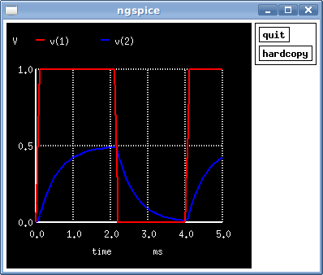

ngspice
Dieser Artikel wurde für die folgenden Ubuntu-Versionen getestet:
Ubuntu 16.04 Xenial Xerus
Zum Verständnis dieses Artikels sind folgende Seiten hilfreich:
ngspice  ist eine Software zur Simulation analoger, digitaler und gemischter elektrischer Schaltungen (als Netzliste) und ein freier Ableger von SPICE3f5. Darüber hinaus ist Ngspice Teil des gEDA-Projekts (GPL Electronic Design Automation), welches eine Sammlung freier und quelloffener Software für die Entwicklung von elektronischen Schaltungen bereit stellt.
ist eine Software zur Simulation analoger, digitaler und gemischter elektrischer Schaltungen (als Netzliste) und ein freier Ableger von SPICE3f5. Darüber hinaus ist Ngspice Teil des gEDA-Projekts (GPL Electronic Design Automation), welches eine Sammlung freier und quelloffener Software für die Entwicklung von elektronischen Schaltungen bereit stellt.
Mit den aufeinander abgestimmten Programmen können u.a. Schaltpläne entworfen, Schaltungen simuliert und Platinen-Layouts (Leiterbahnen-Struktur auf Leiterplatten) erstellt werden. Hierbei handelt es sich um rechnergestützte Hilfsmittel für den Entwurf von elektronischen Systemen, kurz EDA (Electronic Design Automation), welches ein Teilgebiet des CAD (Computer Aided Design) darstellt.
Installation¶
Um ngspice verwenden zu können, muss folgendes Paket installiert [1] werden:
ngspice (multiverse)
 mit apturl
mit apturl
Paketliste zum Kopieren:
sudo apt-get install ngspice
sudo aptitude install ngspice
Nutzung¶
Das Programm wird über seinen Namen im Terminal [2] gestartet. Dabei sollte als Parameter eine Netzliste angegeben werden, welche dann simuliert werden kann:
ngspice DATEINAME
Danach befindet man sich im Programm und hat u.a. folgende Möglichkeiten:
| Befehlssammlung | |
| Befehl | Beschreibung |
exit oder quit | beendet Ngspice |
help | ruft die Hilfe auf |
source DATEINAME | lädt die gewünschte Netzliste |
listing | zeigt die geladene Netzliste |
run | startet eine Simulation |
plot WERT1 WERT2 | zeigt in einem Plot die angegebenen Werte |
print WERT1 WERT2 | gibt die angegebenen Werte im Terminal aus |
v(PUNKT1, PUNKT2) | gibt den Wert der Spannung zwischen den Punkten PUNKT1 und PUNKT2 im Terminal aus. Ist PUNKT2 nicht angegeben, so wird PUNKT1 im Bezug zu GND gesetzt. |
Für weitere Befehle siehe die Ngspice Dokumentation .
Beispiel¶
Zum Testen der Funktion kann folgende funktionsfähige Netzliste verwendet werden (den Inhalt einfach in eine beliebige Textdatei speichern [3] und über source oder Parameter beim Programmstart laden):
1 2 3 4 5 6 7 8 9 10 11 12 13 14 | * Voltage divider with capacitor driven by VPulse *---------------------------------------------- * SPICE 3 - NETLIST .options *------------- Models ------------------------- *---------------------------------------------- C_C1 2 0 1u IC=0 V_V1 1 0 dc 0.0 ac 0.0 PULSE 0.0 1.0 0.0 0.0 0.0 2.0m 4.0m R_R2 2 0 1k R_R1 1 2 1k *---------------------------------------------- .tran 0.0001 0.005 0 .op .END |
Wendet man auf obiges Codebeispiel run und plot v(1) v(2) an, so sollte der Graph wie folgt aussehen:

Erzeugen von Netzlisten¶
Zum einen kann man selbst im Texteditor wie im Beispiel gezeigt Netzlisten erzeugen, oder man verwendet grafische Programme, mit denen man zuerst einen Schaltplan erzeugt und daraus eine Netzliste generieren lässt. Folgende Programme kommen dazu in Frage (die meisten stammen aus dem gEDA-Projekt):
gschem
(mittels gnetlist lassen sich Netzlisten erzeugen)EasySpice
(verwendet gschem als Schaltplaneditor)gspiceui
(verwendet gschem als Schaltplaneditor)Oregano (verwendet seinen eigenen Editor)
Alternative Programme¶
Zuerst ist das ebenso freie Programm Gnucap erwähnenswert, das genauso wie ngspice über die Konsole gesteuert werden kann. Darüber hinaus gibt es noch folgende Closed Source Programme, die wie die genannten grafischen Programme auch einen Schaltplaneditor besitzen:
Beides sind Windowsprogramme, die mit Wine ausgeführt werden können.
Links¶
SPICE - Wikipedia
Gnucap - eine weitere freie SPICE Implementation (gehört auch zum gEDA Projekt)
Schaltungssimulation
 - Übersicht zu zahlreichen Programmen
- Übersicht zu zahlreichen Programmen
- Erstellt mit Inyoka
-
 2004 – 2017 ubuntuusers.de • Einige Rechte vorbehalten
2004 – 2017 ubuntuusers.de • Einige Rechte vorbehalten
Lizenz • Kontakt • Datenschutz • Impressum • Serverstatus -
Serverhousing gespendet von